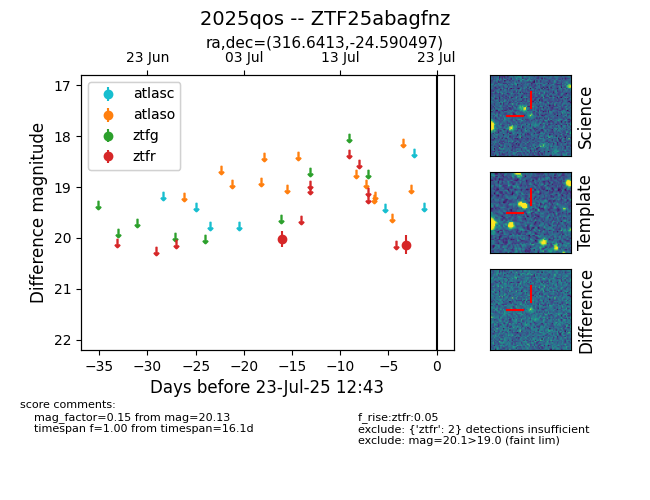

Target ZTF25abagfnz at 2025-07-23 12:43, see:
FINK: fink-portal.org/ZTF25abagfnz
Lasair: lasair-ztf.lsst.ac.uk/objects/ZTF25abagfnz
ALeRCE: alerce.online/object/ZTF25abagfnz
TNS: wis-tns.org/object/2025qos
YSE: ziggy.ucolick.org/yse/transient_detail/2025qos
alt names
ZTF25abagfnz (ztf,fink)
2025qos (tns,yse)
coordinates:
equatorial (ra, dec) = (316.6413,-24.59050)
galactic (l, b) = (22.4518,-39.77161)
photometry
last ztfr=20.13
2 ztfr detections
